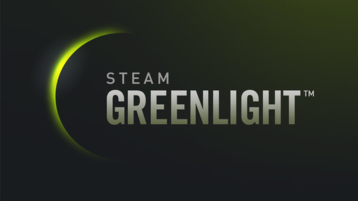

PyDungeon
Desarrollo de un videojuego en la nube
con tecnologías Open Source
Realizado por: Luis Manuel Palomo Sivianes
Dirigido por: Francisco Sivianes Castillo
Contenido
- Introducción y objetivos
- Estado del arte
- Tecnologías y herramientas
- Implementación del juego
- Difusión del juego
- Conclusiones y mejoras a futuro
PyDungeon
- Es un videojuego independiente en 2D de género "Roguelike"
- Realizado usando exclusivamente tecnologías Open Source
- Utiliza generación procedural para crear el contenido
- Se basa en un servidor en la nube
Objetivos del proyecto
- Análisis de herramientas Open Source disponibles para el desarrollo de un videojuego independiente
- Implementación de algoritmos de generación procedural y de inteligencia artificial
- Implementación de un servidor en la nube que interactúe con el cliente de juego
Metodología
Los videojuegos independientes
- Equipos pequeños
- Escaso o nulo presupuesto
- Sin restricciones creativas
Plataformas de financiación
Casos de éxito
El género roguelike
- Un jugador
- Sistema de turnos
- Énfasis en el contenido aleatorio
- Premisa de juego sencilla
Estado del arte
Tecnologías utilizadas
- Lenguaje de programación: Python
- Motor de juego: PyGame
- Framework web: Django
¿Por qué Python?
- Open Source
- Facilidad de aprendizaje
- Flexibilidad
- Extensa comunidad
- Demanda alta
PyGame
- Open Source
- Sencillo y limpio
- Enfocado en juegos 2D
Django
- Open Source
- Facilidad de uso
- Gran comunidad
Herramientas
Documentación
Memoria: LibreOffice
Transparencias: reveal.js
Entornos de desarrollo
Python: PyCharm
Html, CSS, Javascript: Atom
Control de versiones
Sistema: Git
Repositorio: GitHub
Editores gráficos
Imágenes: Gimp
Sprites y Tilesets: Piskel
Diagramas: Dia Diagram Editor
Mockups: Pencil Project
Implementación
Programación dirigida por eventos
Generación procedural
- Basado en habitaciones
- Posición inicial
- Enemigos y cofres según dificultad
Inteligencia Artificial
- Aleatoria
- Agresiva
Servidor
- Arquitectura API Rest
- Llamadas HTTP
- Respuestas en JSON
Difusión
Página web
Conclusiones
- Gran variedad de herramientas Open Source de gran calidad
- Los algoritmos de generación procedural facilitan mucho el desarrollo
- Desarrollar un servidor para la nube es fácil y sencillo
- Utilizando redes sociales se ha conseguido realizar una campaña de márketing sin inversión previa
Mejoras
- Música y efectos de sonido
- Animaciones y efectos visuales
- Más funcionalidad en el servidor
- Más tipos de enemigos y objetos
- Mejorar el algoritmo de generación procedural
PyDungeon
Desarrollo de un videojuego en la nube
con tecnologías Open Source
Realizado por: Luis Manuel Palomo Sivianes
Dirigido por: Francisco Sivianes Castillo